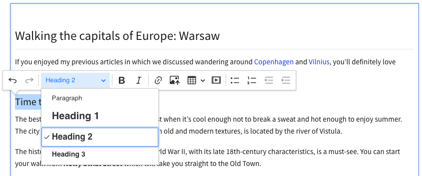

Editor toolbars
# Main editor toolbar
The toolbar is the most basic user interface element of CKEditor 5 that gives you convenient access to all its features. It has buttons and dropdowns that you can use to format, manage, insert, and change elements of your content.
# Demo
Below is a sample toolbar with a basic set of features. Toolbar items can be easily added or removed. Read on to learn how to do that.
Tardigrades — near-microscopic superheroes
Don’t let the cuddly exterior fool you: tardigrades are some tough cookies. Though their cute colloquial name — water bears — might suggest otherwise, these tiny animals are among the most resilient creatures on Earth.
Tardigrades have segmented bodies that rarely extend beyond 1 millimeter. Typically, each individual is made up of only around 1,000 cells, compared to trillions of cells constituting a human body.
For clarity, all demos in this guide present a limited set of features. Visit the feature-rich editor example to see more in action.
# Basic toolbar configuration
Toolbar configuration is a strict UI-related setting. Removing a toolbar item does not remove the feature from the editor internals. If your goal with the toolbar configuration is to remove features, the right solution is to also remove their respective plugins. Check the removing features guide for more information.
The toolbar offers a flexible arrangement, achieved through configuration. Please note, that using CKEditor 5 Builder makes this task significantly easier.
The following example may give you a general idea:
ClassicEditor
.create( document.querySelector( '#editor' ), {
// ... Other configuration options ...
toolbar: [ 'undo', 'redo', 'bold', 'italic', 'numberedList', 'bulletedList' ]
} )
.catch( error => {
console.log( error );
} );
# Separating toolbar items
You can use '|' to create a separator between groups of toolbar items. This works in both the basic and extended configuration formats.
Below you can find an example of a simple toolbar with button grouping. The group separators ('|') set in the configuration help organize the toolbar.
A brief history of a tiny beast
Tardigrades were discovered in the late 18th century by German zoologist Johann August Ephraim Goeze. Enamored with their teddy bear-like appearance, he came up with the name kleine Wasserbären, which means ‘little water bears’.
Tardigrada, the Latin name of the group, was coined shortly thereafter by Lazzaro Spallanzani, an Italian biologist. The name translates into ‘slowly stepping’ and refers to the creatures’ unhurried gait.
Since then, around 1,300 tardigrade species have been discovered in diverse habitats: from the deep sea to mountain tops.
# Extended toolbar configuration format
There are two available toolbar configuration formats:
Basic:
toolbar: [ 'bold', 'italic', '|', 'undo', 'redo', '|', 'numberedList', 'bulletedList' ]
And extended:
toolbar: {
items: [ 'bold', 'italic', '|', 'undo', 'redo', '|', 'numberedList', 'bulletedList' ]
}
You can use the extended toolbar configuration format to access additional options:
toolbar: {
items: [
'undo', 'redo',
'|',
'heading',
'|',
'fontfamily', 'fontsize', 'fontColor', 'fontBackgroundColor',
'|',
'bold', 'italic', 'strikethrough', 'subscript', 'superscript', 'code',
'|',
'link', 'uploadImage', 'blockQuote', 'codeBlock',
'|',
'bulletedList', 'numberedList', 'todoList', 'outdent', 'indent'
],
shouldNotGroupWhenFull: false
}
-
items– An array of toolbar item names. Most of the components (buttons, dropdowns, etc.) that you can use as toolbar items are described in the Features section. A full list is defined ineditor.ui.componentFactoryand can be listed using the following snippet:Array.from( editor.ui.componentFactory.names() ). Besides button names, you can also use the dedicated separators for toolbar groups ('|') and toolbar lines ('-'). -
removeItems– An array of toolbar item names. With this setting, you can change the default toolbar configuration without the need to define the entire list. You can specify a couple of buttons that you want to remove instead of specifying all the buttons you want to keep. If, after removing an item, the toolbar will have two or more consecutive separators ('|'), the duplicates will be removed automatically. -
shouldNotGroupWhenFull– When set totrue, the toolbar will stop grouping items and let them wrap to the next line when there is not enough space to display them in a single row. This setting isfalseby default, which enables item grouping.
The demo below presents the “regular” toolbar look with shouldNotGroupWhenFull set to false. If there are more toolbar items than can fit in the toolbar in the current display width, some items get hidden. You can access them by clicking the show more items button .
What doesn’t kill me…
Their cuteness aside, tardigrades are best known for their unbelievable resilience. As one study has shown, they can survive even in outer space.
Here’s a selection of extreme conditions tardigrades can withstand:
- A few minutes at 151°C
- A few minutes at −272°C (just one degree above the absolute zero!)
- Up to ten years in a dehydrated state
- Pressure ranges from near-zero to 1,200 atmospheres
- Even 1,000 times more radiation than would be fatal to humans
# Multiline (wrapping) toolbar
In the extended toolbar configuration format, it is also possible to arrange toolbar items into multiple lines. Here is how to achieve this:
- Set the
shouldNotGroupWhenFulloption totrue, so items will not be grouped when the toolbar overflows. They will wrap to the new line instead. - Additionally, you can use the
'-'separator inside the item list to set the breaking point explicitly.
toolbar: {
items: [ 'bold', 'italic', '|', 'undo', 'redo', '-', 'numberedList', 'bulletedList' ],
shouldNotGroupWhenFull: true
}
# Automatic toolbar wrapping
When you set shouldNotGroupWhenFull to true, by default the toolbar items are automatically wrapped into a new line once they do not fit the editor width. The mechanism is automatic and only wraps excess items. Notice that while the toolbar group separators '|' are preserved, the groups may be split when they overflow.
toolbar: {
items: [
'undo', 'redo',
'|',
'heading',
'|',
'fontfamily', 'fontsize', 'fontColor', 'fontBackgroundColor',
'|',
'bold', 'italic', 'strikethrough', 'subscript', 'superscript', 'code',
'|',
'link', 'uploadImage', 'blockQuote', 'codeBlock',
'|',
'alignment',
'|',
'bulletedList', 'numberedList', 'todoList', 'outdent', 'indent'
],
shouldNotGroupWhenFull: true
}
See how it works in practice. Play with the browser window width to see how the buttons behave when the toolbar gets wrapped into multiple lines.
The plant kingdom
The plant kingdom is a diverse group of organisms that includes both tiny algae and giant sequoias. Despite this diversity, all plants have a few things in common.
Plants are organisms that:
- Have bodies made of multiple cells.
- Can synthesize food in a process called photosynthesis.
- Usually can’t move
- Have cells with walls made of cellulose.
# Explicit wrapping breakpoint
Setting an explicit break point in the toolbar configuration with '-' lets you create your own predefined multiline toolbar configuration. Toolbar items will then be grouped and put in lines as declared in the configuration.
toolbar: {
items: [
'undo', 'redo',
'|', 'heading',
'|', 'fontfamily', 'fontsize', 'fontColor', 'fontBackgroundColor',
'|', 'bold', 'italic', 'strikethrough', 'subscript', 'superscript', 'code',
'-', // break point
'|', 'alignment',
'link', 'uploadImage', 'blockQuote', 'codeBlock',
'|', 'bulletedList', 'numberedList', 'todoList', 'outdent', 'indent'
],
shouldNotGroupWhenFull: true
}
Seedless plants
Plants in this group, called cryptogams, do not produce seeds.
Freshwater and marine algae
Green algae do not form true roots, stems, or leaves. This group gave rise to all land plants hundreds of millions of years ago.
# Grouping toolbar items in dropdowns (nested toolbars)
To save space in your toolbar or arrange the features thematically, you can group several items into a dropdown. For instance, check out the following configuration:
toolbar: [
{
label: 'More basic styles',
icon: 'threeVerticalDots',
items: [ 'strikethrough', 'superscript', 'subscript' ]
},
// More of toolbar's configuration.
// ...
]
It will create a “Basic styles” dropdown with a three vertical dots icon containing the additional basic text styles buttons set. You can test it in the demo below along with a few more toolbar dropdowns.
Mosses and liverworts
Mosses and liverworts are the oldest land plants. They have a stem and structures resembling leaves and roots. Unlike other land plants, they lack a vascular system (a special tissue to transport water and nutrients).
Ferns and horsetails
Ferns and horsetails have distinct stems, leaves, and roots. They are the oldest vascular plants. This means that, unlike mosses and liverworts, they do have a vascular system that transports water and nutrients through their bodies.
# Customization
You can customize the look of the dropdown by configuring additional properties, such as the icon, label, or tooltip text.
# Displaying the label
You can control the way the UI element is displayed. For instance, to hide the icon and to display the label, you can use the following configuration:
{
label: 'Basic styles',
// Show the textual label of the dropdown.
// Note that the "icon" property is not configured and defaults to three dots.
withText: true,
items: [ 'bold', 'italic', 'strikethrough', 'superscript', 'subscript' ]
}
Note: The label will also automatically show up if the icon is false (learn more).
Seed-producing plants
Plants in this group, called phanerogams, can produce seeds.
Non-flowering plants
Members of this group, called gymnosperms, are the first vascular plants to produce seeds. The seeds, unlike in flowering plants, don’t have an outer covering.
# Changing the icon
You can use one of the icons listed below for your dropdown:
| Icon name | Preview |
|---|---|
'threeVerticalDots' (default) |
|
'alignLeft' |
|
'bold' |
|
'importExport' |
|
'paragraph' |
|
'text' |
|
'plus' |
|
'dragIndicator' |
|
'pilcrow' |
- The default icons are loaded from the
ckeditor5-corepackage. - If no icon is specified,
'threeVerticalDots'will be used as a default. - If
icon: falseis configured, no icon will be displayed and the text label will show up instead. - You can set a custom icon for the dropdown by passing an SVG string.
Here is an example:
toolbar: [
'undo', 'redo', '|',
{
// This dropdown uses a default icon because none was specified.
label: 'Fonts',
items: [ 'fontSize', 'fontFamily', 'fontColor', 'fontBackgroundColor' ]
},
'|',
{
label: 'A drop-down with a custom icon',
// If you want your icon to change the color dynamically (for example, when opened)
// avoid fill="..." and stroke="..." styling attributes.
// Use solid shapes and avoid paths with strokes.
// eslint-disable-next-line max-len
icon: '<svg viewBox="0 0 68 64" xmlns="http://www.w3.org/2000/svg"><g fill="none" fill-rule="evenodd"><path d="M43.71 11.025a11.508 11.508 0 0 0-1.213 5.159c0 6.42 5.244 11.625 11.713 11.625.083 0 .167 0 .25-.002v16.282a5.464 5.464 0 0 1-2.756 4.739L30.986 60.7a5.548 5.548 0 0 1-5.512 0L4.756 48.828A5.464 5.464 0 0 1 2 44.089V20.344c0-1.955 1.05-3.76 2.756-4.738L25.474 3.733a5.548 5.548 0 0 1 5.512 0l12.724 7.292z" fill="#FFF"/><path d="M45.684 8.79a12.604 12.604 0 0 0-1.329 5.65c0 7.032 5.744 12.733 12.829 12.733.091 0 .183-.001.274-.003v17.834a5.987 5.987 0 0 1-3.019 5.19L31.747 63.196a6.076 6.076 0 0 1-6.037 0L3.02 50.193A5.984 5.984 0 0 1 0 45.003V18.997c0-2.14 1.15-4.119 3.019-5.19L25.71.804a6.076 6.076 0 0 1 6.037 0L45.684 8.79zm-29.44 11.89c-.834 0-1.51.671-1.51 1.498v.715c0 .828.676 1.498 1.51 1.498h25.489c.833 0 1.51-.67 1.51-1.498v-.715c0-.827-.677-1.498-1.51-1.498h-25.49.001zm0 9.227c-.834 0-1.51.671-1.51 1.498v.715c0 .828.676 1.498 1.51 1.498h18.479c.833 0 1.509-.67 1.509-1.498v-.715c0-.827-.676-1.498-1.51-1.498H16.244zm0 9.227c-.834 0-1.51.671-1.51 1.498v.715c0 .828.676 1.498 1.51 1.498h25.489c.833 0 1.51-.67 1.51-1.498v-.715c0-.827-.677-1.498-1.51-1.498h-25.49.001zm41.191-14.459c-5.835 0-10.565-4.695-10.565-10.486 0-5.792 4.73-10.487 10.565-10.487C63.27 3.703 68 8.398 68 14.19c0 5.791-4.73 10.486-10.565 10.486v-.001z" fill="#1EBC61" fill-rule="nonzero"/><path d="M60.857 15.995c0-.467-.084-.875-.251-1.225a2.547 2.547 0 0 0-.686-.88 2.888 2.888 0 0 0-1.026-.531 4.418 4.418 0 0 0-1.259-.175c-.134 0-.283.006-.447.018-.15.01-.3.034-.446.07l.075-1.4h3.587v-1.8h-5.462l-.214 5.06c.319-.116.682-.21 1.089-.28.406-.071.77-.107 1.088-.107.218 0 .437.021.655.063.218.041.413.114.585.218s.313.244.422.419c.109.175.163.391.163.65 0 .424-.132.745-.396.961a1.434 1.434 0 0 1-.938.325c-.352 0-.656-.1-.912-.3-.256-.2-.43-.453-.523-.762l-1.925.588c.1.35.258.664.472.943.214.279.47.514.767.706.298.191.63.339.995.443.365.104.749.156 1.151.156.437 0 .86-.064 1.272-.193.41-.13.778-.323 1.1-.581a2.8 2.8 0 0 0 .775-.981c.193-.396.29-.864.29-1.405h-.001z" fill="#FFF" fill-rule="nonzero"/></g></svg>',
items: [ 'bold', 'italic', 'strikethrough', 'superscript', 'subscript' ]
},
'|',
{
// A "plus" sign icon works best for content insertion tools.
label: 'Insert',
icon: 'plus',
items: [ 'uploadImage', 'insertTable' ]
},
'|',
{
// This dropdown has the icon disabled and a text label instead.
label: 'Lists',
icon: false,
items: [ 'bulletedList', 'numberedList', 'todoList' ]
}
],
And here is the effect:
Conifers
Most members of this group are evergreen trees and shrubs. They are known for their needles (specialized leaves) and cones (where the seeds are kept).
Ginkgos and cycads
Ginkgos and cycads are both very old plant groups. The only surviving ginkgo species is the ginkgo tree (Ginkgo biloba). Cycads resemble palm trees, but the two are not related. The latter belong to flowering plants.
# Customizing the tooltip
By default, the tooltip of the button shares its text with the label. You can customize it to better describe your dropdown and make it more accessible by using the tooltip property:
toolbar: [
{
label: 'Others',
tooltip: 'Basic formatting features',
items: [ 'bold', 'italic' ]
},
'|',
'undo', 'redo'
]
Flowering plants
When you hear the word ‘plant’, you likely picture a member of this group. Called angiosperms, they form the most diverse and abundant division of the plant kingdom. Plants in this group can make flowers and fruits that enclose seeds.
# Listing available items
You can use the following snippet to retrieve all toolbar items available in your editor:
Array.from( editor.ui.componentFactory.names() );
# Adding a custom button
Refer to the step-by-step tutorial to learn how to build a custom plugin, register its button, and add it to the toolbar configuration.
# Decoupled editor
When using the Decoupled editor, you will need to insert the menu bar in a desired place yourself. The menu bar HTML element is available under the editor.ui.view.toolbar.element property.
<div id="toolbarContainer"></div>
<div id="editor"><p>Document content.</p></div>
DecoupledEditor
.create( document.querySelector( '#editor' ), {
// ... Other configuration options ...
toolbar: [ 'undo', 'redo', 'bold', 'italic', 'numberedList', 'bulletedList' ],
} )
.then( editor => {
document.querySelector( '#toolbarContainer' ).appendChild( editor.ui.view.toolbar.element );
} );
# Balloon toolbar
A ballon toolbar is a special instance of the main toolbar, available in the Balloon and ballon block editors. Instead of being fixed to the editing area, it pops up when the user selects some content and provides a toolset for editing as pictured below.

# Block toolbar
The block toolbar provides an additional configurable toolbar on the left-hand side of the content area, useful when the main toolbar is not accessible (for example in certain layouts, like balloon block editor).
# Demo
In the editor below, move the caret around the content. You will see that the block toolbar button is following your selection. Click the button to show the toolbar.
The great things you learn from traveling

Like all the great things on earth traveling teaches us by example. Here are some of the most precious lessons I’ve learned over the years of traveling.
Appreciation of diversity
Getting used to an entirely different culture can be challenging. While it’s also nice to learn about cultures online or from books, nothing comes close to experiencing cultural diversity in person. You learn to appreciate each and every single one of the differences while you become more culturally fluid.
This demo presents a limited set of features. Visit the feature-rich editor example to see more in action.
# Additional feature information
To access the block toolbar, you need to click the button with braille pattern dots icon on the left-hand side of the content area (the gutter). The button appears next to the selected block element (for example, a paragraph), following the caret as the user edits the content and navigates the document.
The icon is also a handle to drag blocks of content around the editor. Click a heading in the demo above and drag it all the way down between the following paragraphs to see this functionality in action.
The block toolbar complements the balloon editor type where it falls short, for example when you must insert some content (like an image), but the selection is collapsed, so you cannot access the toolbar. It can, however, be added to any type of editor and configure accordingly (see below).
See the balloon block editor example page, too.
# Block toolbar installation
Remember to add relevant features to the editor configuration first. The block toolbar provides a space for the buttons, but it does not bring the actual features. For example, the heading1 button will not work if there is no Headings feature in the editor.
To add this feature to your editor, add the BlockToolbar to your plugin list and configure the feature using the blockToolbar property:
import { BlockToolbar, HeadingButtonsUI, ParagraphButtonUI } from 'ckeditor5';
BalloonEditor.create( document.querySelector( '#editor' ), {
licenseKey: '<YOUR_LICENSE_KEY>', // Or 'GPL'.
plugins: [ BlockToolbar, ParagraphButtonUI, HeadingButtonsUI, /* ... */ ],
blockToolbar: [
'paragraph', 'heading1', 'heading2', 'heading3',
'|',
'bulletedList', 'numberedList',
'|',
'blockQuote', 'uploadImage'
],
toolbar: [ /* ... */ ]
} )
.then( /* ... */ );
# Block toolbar configuration
The content of the block toolbar can be defined using the blockToolbar configuration. It is similar to the regular toolbar UI items list.
blockToolbar: {
items: [
'bold',
'italic',
'link'
]
}
See the installation instructions for a more advanced example.
Because the toolbar is always connected to the block of content, it works best with the features that modify entire blocks (for example, create headings) or insert objects (like images or tables) rather than inline styles (like bold or italic).
To adjust the position of the block toolbar button to match the styles of your website, use the CSS transform property:
.ck.ck-block-toolbar-button {
transform: translateX( -10px );
}
If you plan to run the editor in a right–to–left (RTL) language, keep in mind the button will be attached to the right boundary of the editable area. In that case, make sure the CSS position adjustment works properly by adding the following styles:
.ck[dir="rtl"] .ck-block-toolbar-button {
transform: translateX( 10px );
}
You can use the shouldNotGroupWhenFull configuration option to prevent automatic items grouping in the block toolbar.
You can also change the current default toolbar icon 'dragIndicator' by choosing predefined icon from icon list using the icon option or by passing a SVG string:
blockToolbar: {
items: [ /* ... */ ],
icon: 'pilcrow'
// or
// icon: '<svg xmlns="http://www.w3.org/2000/svg" height="24" viewBox="0 -960 960 960" width="24">' +
// '<path d="M120-240v-80h720v80H120Zm0-200v-80h720v80H120Zm0-200v-80h720v80H120Z"/></svg>'
},
toolbar: [ /* ... */ ]
You can provide a custom toolbar button icon by passing an SVG string.
# Feature-specific toolbars
Some features also sport their own dedicated toolbars. In the demos on this page, you can see the image toolbar or the table toolbars when you use the respective features. You will find all information about these toolbars in the respective feature guides.
Every day, we work hard to keep our documentation complete. Have you spotted outdated information? Is something missing? Please report it via our issue tracker.
With the release of version 42.0.0, we have rewritten much of our documentation to reflect the new import paths and features. We appreciate your feedback to help us ensure its accuracy and completeness.